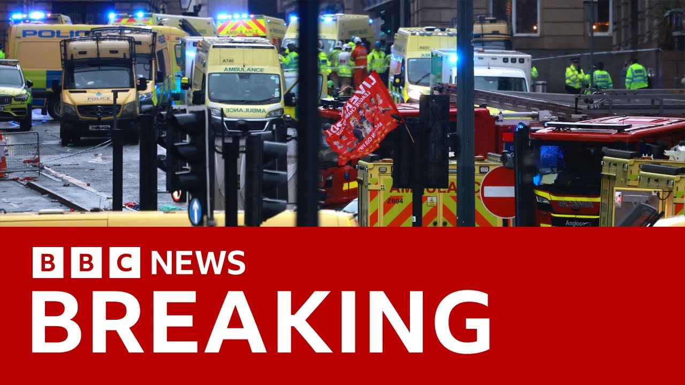

【利物浦足球俱乐部英超夺冠游行期间汽车撞人事件后一名男子被捕 | BBC新闻】
Summary: A 53-year-old white British man was arrested after a car crashed into a crowd during Liverpool FC's Premier League victory parade. Eyewitness footage circulated on social media, showing the moment of impact. Police responded to the incident around 6 p.m., but injuries remain unclear. Hundreds of thousands had gathered for the celebration. UK leaders expressed shock and thanked emergency services, while Liverpool FC offered support to those affected.
摘要： 一名53岁的英国白人男子在利物浦足球俱乐部英超夺冠游行期间驾车撞入人群后被逮捕。目击者拍摄的视频在社交媒体上流传，显示了撞击瞬间。警方于下午6点左右接到报案，但伤亡情况尚不明确。数十万人参加了庆祝活动。英国领导人表示震惊并感谢应急部门，利物浦足球俱乐部则向受影响者表示支持。

⏱️ Estimated Reading Time: 3 min
Right, this is BBC News.
这里是BBC新闻。
It's just gone 900 PM here in the UK.
英国时间刚过晚上9点。
I'm Lewis Bourne Jones.
我是Lewis Bourne Jones。
We have continuous coverage of the incident in Liverpool.
我们正在持续报道利物浦的事件。
Here's what we know so far.
以下是目前掌握的情况。
A 53-year-old white British man has been arrested after a car crashed into a crowd of people during Liverpool Football Club's Premier League victory parade earlier.
一名53岁的英国白人男子在早些时候利物浦足球俱乐部英超夺冠游行期间驾车撞入人群后被逮捕。
Different eyewitnesses images of the moment the car hit the crowd have been circulating on social media.
社交媒体上流传着不同目击者拍摄的汽车撞入人群瞬间的画面。
Uh this is a moment from one of the videos of the car starts to hit people.
这是其中一段视频中汽车开始撞人的瞬间。
We've frozen the frame here to avoid showing you the distressing moments of impact.
我们暂停了画面以避免展示撞击的 distressing 瞬间。
That gives you a sense of the incident.
这让你对事件有了大致了解。
And this is the scene in the aftermath.
这是事后的现场画面。
Uh you can see the fluorescent jackets of the police officers surrounding there the dark vehicle uh in the middle of the picture.
你可以看到警察的荧光夹克包围着画面中央的深色车辆。
Muryside police say they were called just after 6 p.m. to reports of car colliding with pedestrians.
默西赛德警方表示，他们在下午6点刚过接到汽车撞上行人的报案。
Not yet clear whether anyone has been seriously injured and police haven't provided any further details.
目前尚不清楚是否有人受重伤，警方也未提供更多细节。
There's been a large police presence there in the hours since.
此后数小时内现场部署了大量警力。
Hundreds of thousands had turned out to celebrate Liverpool's triumph in the Premier League.
数十万人前来庆祝利物浦在英超联赛中的胜利。
Well, we've heard from Karma, Prime Minister, in the last uh hour or so, posting on social media.
我们在过去一小时左右收到了首相卡玛在社交媒体上的发言。
The scenes in Liverpool are appalling.
利物浦的场景令人震惊。
My thoughts are with all those injured or affected.
我与所有受伤或受影响的人同在。
I want to thank the police and emergency services for their swift and ongoing response to this shocking incident.
我要感谢警方和应急部门对这起震惊事件的迅速且持续的反应。
I'm being kept updated on developments and asked that we give the police the space they need to investigate.
我正持续关注事态发展，并呼吁给予警方调查所需的空间。
Well, Cooper, Home Secretary, saying thank you to the police and emergency services for their swift response to the truly shocking and horrendous scenes in Liverpool this evening.
内政大臣库珀表示，感谢警方和应急部门对今晚利物浦这起真正令人震惊和可怕事件的迅速反应。
Thinking of all those affected at this very difficult time.
在这个非常艰难的时刻，我与所有受影响的人同在。
The police are investigating and I'm being kept updated on developments.
警方正在调查，我正持续关注进展。
And let's get a statement now from Liverpool FC.
现在让我们听听利物浦足球俱乐部的声明。
They are posting on social media this.
他们在社交媒体上发布了以下内容。
We're in direct contact with Muryside Police regarding the incident on Water Street which happened towards the end of the trophy parade earlier this evening.
我们正与默西赛德警方直接联系，了解今晚早些时候奖杯游行接近结束时在Water Street发生的事件。
Our thoughts and prayers are with those who have been affected by this serious incident and we will continue to offer our full support to the emergency services and local authorities who are dealing with this incident.
我们的思念和祈祷与受这起严重事件影响的人同在，我们将继续全力支持处理此事的应急部门和地方当局。